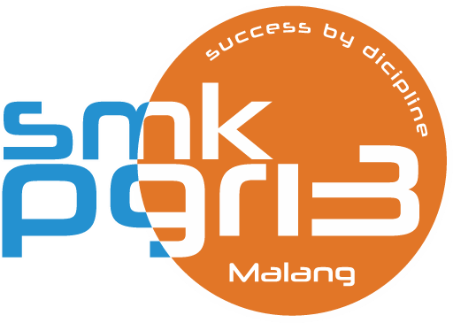

MEMORIES & GALLERY
Galeri Kenangan Kelas
Dokumentasi momen kebersamaan, kemenangan lomba, praktikum, dan acara spesial XII MIPA 1.
Telusuri koleksi foto terbaik kami dari berbagai kegiatan kelas, persiapan lomba, dan acara seru yang mempererat persahabatan.
